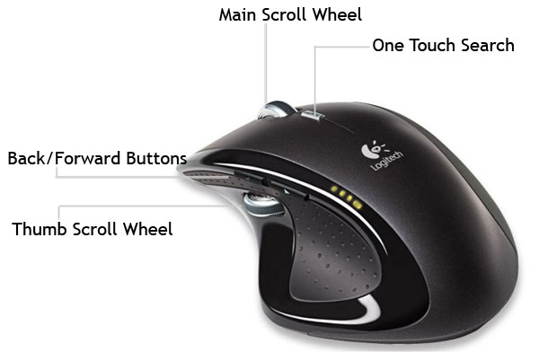

Configuring The Logitech MX Revolution Mouse
Kristina got me the mouse I have long been eying to replace my 5-year old Microsoft Wireless Explorer Blue mouse: The Logitech MX Revolution. It was an early anniversary gift as our 7 year anniversary is this Friday, March 21st. Logitech claims it is the most advanced mouse in the world and after dragging it around my screen for a minute or two I whole-heartedly agree. It works fine as a regular mouse, but where the real power is in the advanced configuration of the many buttons. Furthermore, you can program the buttons to do different things in different applications providing total flexibility with integration into your workflow. Since Firefox is the main application used on my PC, I decided to turbo charge my mouse shortcuts for speedier web surfing.

The first part was easy. The standard conventions of left-click, right-click, and the scroll wheel would remain in tact. The tried and true middle-click which I rely on to close tabs or open links in new tabs, is no where to be found (more on this later). Instead I have set up the clicking of the main scroll wheel to switch between two different scroll types. The Logitech MX Revolution can be controlled via software to scroll in click-mode or free-wheel mode. Click-mode is just like any other mouse scroll wheel with each turn producing a click. This is used for more precise scrolling. But if you need to get through a long web page in a short amount of time, free-wheel mode will let you spin the scroll with a mighty flick and continue scrolling for up to 7 seconds. Sure makes getting around the largest web page in the universe a lot easier. If you wanted you could define the default scroll-mode in specific applications. I found this difficult to get used to so I set the global behavior to be free-wheel mode with middle clicking switching to click-mode.
Moving on in Firefox, the back and forward buttons naturally would correlate to the back and forward buttons of the browser. This was a no brainier. But the thumb wheel left me puzzled about what task to assign to it. This wasn’t like the main scroll wheel but instead more like a lever that you could push up, down, and in with your right thumb. One interesting combination is to map the copy (Control + C), paste (Control + V), and cut (Control + X) commands to the up, down, and pushed-in positions respectively. In Firefox I find myself switching through tabs a lot so I decided to map Control + Tab (switch to the tab to the right), Control + Shift + Tab (shift to the tab on the left), and Control + W (close tab) functions to the thumb wheel. This set-up works great when tackling the daily news reading I do.
Of course if you have become used to the middle click opening links to new tabs, then you will want to install the free uberOptions which gives you a wide range of additional options for configuring your mouse. I set my one touch search button to perform a middle click. It’s a little out of the way from my index finer, but I can deal with that. The main scroll wheel itself is a bit too heavy to push in multiple times. Besides, Logitech’s configuration software, SetPoint, doesn’t let you assign a click function to this button.
It took a bit of experimenting but I believe I have settled on the ideal set-up for my mouse. This thing is such a joy to use I wish I had taken the leap sooner. If you are in need of a new mouse and you take personal configuration seriously, then the Logitech MX Revolution is a perfect pointing device for you.
What are some handy mouse or keyboard shortcuts that you rely on?
*If you’re more of a keyboard-shortcut kind of person, thanks for reading all the way through. I appreciate it 

Logitech SetPoint Control Center 6.30.41 allowed me to set my middle click as a standard middle click (Other > Middle Button) instead of a scroll-mode change. I don’t like the feel either, but it works.
You can also set the scroll wheel to automatically switch to free spin when it’s scrolled fast enough.
Thanks for the idea for switching tabs for the side scroll-er. I was using it as a volume control. Volume Up, Down and Mute.
Reply
Oh memories. I wish I used this mouse more often but at work I use an iMac with the battery-sucking Magic Mouse now. One day I’ll upgrade my PC desktop at home and use it a bit more where my mouse sits idly waiting for my return.